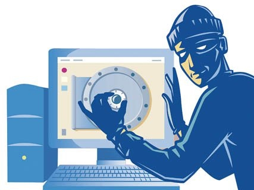
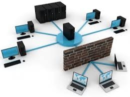

La seguridad informática sirve para garantizar la privacidad de la información y la continuidad del servicio, tratando de minimizar la vulnerabilidad de los sistemas y de la información contenida en ellos, así como de las redes privadas y sus recursos.
En este sentido, la Seguridad Informática sirve para la protección de la información, en contra de amenazas o peligros, para evitar daños y para minimizar riesgos, relacionados con ella.
La seguridad informática debe vigilar las siguientes propiedades:
La información debe ser vista y manipulada solo por quien o quienes tengan el derecho de hacerlo. Un ejemplo de ataque a la Privacidad es la Divulgación de Información Confidencial o personal.
La información deber ser consistente, fiable y no propensa a alteraciones no deseadas. Un ejemplo de ataques a la integridad es la modificación no autorizada de los saldos en un sistema bancario, es decir, la modificación de números en un banco que provoca un caos en el ente financiero.

La información debe estar en el momento que el usuario requiera de ella. Un ataque a la disponibilidad es la negación de servicio , que es un ataque a un sistema de computadoras o red que causa que un servicio o recurso sea inaccesible a los usuarios legítimos. Seguridad informática.
Dentro del concepto de seguridad de una computadora, se distinguen:
Comprende el aspecto de hardware (mouse, monitor, teclado, etc.), la manipulación del mismo, así como también del ambiente en el cual se va a instalar el equipo (en particular, la sala de servidores).
Comprende el aspecto de los sistemas, tanto operativos como de aplicaciones, y principalmente de la información del usuario.

Incluye todo lo que hace referencia a la seguridad en todas sus formas de comunicación.